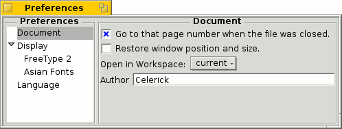
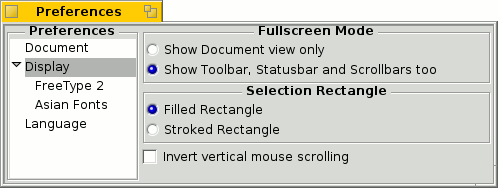

Preferencias
Preferencias
BePDF permite al usuario configurar muchos aspectos de la representación del archivo PDF.
Panel Documento
- Permite al usuario el: seleccionar un marcador en la última página vista cuando vuelve a abrir un documento visto anteriormente (especialmente útil para documentos largos);
- hacer que BePDF recuerde el tamaño de ventana y la posición en la pantalla;
- abrir a BePDF en el espacio de trabajo designado; y
- seleccionar al autor de las anotaciones nuevas o cambiadas.
Panel Desplegar
- Selecciona el modo de pantalla completa.
- Elige el estilo de selección rectangular.
Fuentes Asiáticas

Especifica el archivo de la fuente para representar texto CJK (chino, japonés y coreano).
Panel Idioma

Selecciona el idioma de los menús de BePDF y todo el resto del texto desplegado. Debido a que esta característica cambia el idioma desplegado, los usuarios debieran cuidar en no cambiar la traducción a un idioma que les sea ajeno; hacerlo podría llevar a dificultades al navegar en BePDF.
También, algunos idiomas requieren fuentes especiales para desplegar los carácteres nativos. El usuario debiera asegurarse que estas fuentes estén apropiadamente instaladas previo a cambiar las selecciones de idioma.